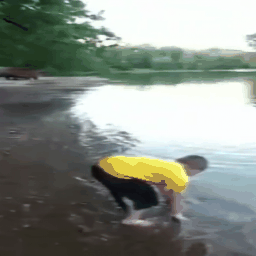
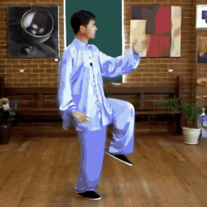
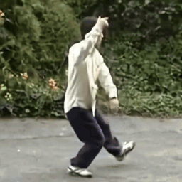

Examples
Text-to-Video Generation
We adapt the LTX-Video 2B (0.9.5 distilled) architecture to be compatible with Flowception and train it on a general domain internal data split of approximately 5 million text-video pairs. Below are example generations.
"A boat cruising in the sea. In the background the sunset casts a warm light over the water. In the distance we can see an island that resembles a mountain."
"Pretty farmer. agriculture business concept. farmer girl examines the rose crops at sunset. farmer walk agriculture lifestyle rose concept. farmer works in a field with roses at sunset."
"A wild horse walking by a lake. Beautiful scene."
"A cute bear in a knitted blue sweater and round glasses lounges on a sofa, reading a newspaper. A packed bookshelf and a crackling fireplace glow warmly in the background."
"A jaguar in a lake eating a chocolate cake."
"A yellow taxi driving through rainy New York streets at night, neon reflections on wet asphalt and light mist in the air."
Interpolation & Image-to-Video
Video interpolation and image-to-video generation across different datasets.





